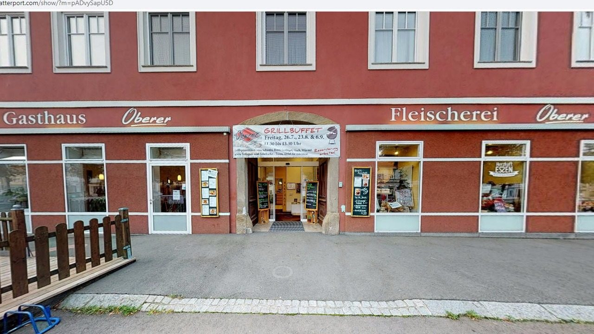

Restaurant
ca. 60 Personen
Der helle Gastraum für Mittagstisch, Familienessen und Reisegruppen.
Hauptplatz 16, Mureck · seit vier Generationen
Links die Fleischerei, rechts das Gasthaus – dazwischen dieselbe Familie, dieselben Rezepte und Fleisch, das ausnahmslos aus der Steiermark kommt.

Linke Tür
Traditionelle und hausgemachte Gerichte stehen an vorderster Stelle – dazu Burger, Steaks und vegetarische Speisen. 60 Plätze im Restaurant, 35 im rustikalen Stüberl, 40 im urigen Keller, dazu der Gastgarten mit Blick in den Auwald.
Rechte Tür
Alle Schinken und Wurstwaren entstehen im eigenen Betrieb und werden nach traditionellen Familienrezepten verfeinert. Für die Grillzeit schneidet Fleischermeister Jörg Oberer die Zuschnitte selbst – aus Rindertalgreifung, Dry Aging und weiteren Reifungsverfahren.
01 Das Haus in Zahlen
Seit 1995 leitet Jörg Oberer das Unternehmen, unterstützt von seiner Frau Maria Oberer. 2003 und 2004 wurde umfangreich renoviert und umgebaut.

02 Aus der Küche
In unserem Gasthaus stehen traditionelle und hausgemachte Gerichte an vorderster Stelle. Dennoch bieten wir auch Burger, Steak und vegetarische Speisen an.
Seit einigen Jahren sind wir Mitglied beim AMA-Gastrosiegel, weil es genau unserem Verständnis von regionaler Verbundenheit entspricht: „Aus der Region für die Region“ – für eine sinnvolle, traditionelle, regionale Wertschöpfung, frisch und in bester Qualität, ohne lange Transportwege.
Die Tageskarte wechselt täglich, je nachdem, was saisonal verfügbar ist.
03 Vier Räume, ein Anlass
Restaurant
Der helle Gastraum für Mittagstisch, Familienessen und Reisegruppen.
Stüberl
Keller & Gastgarten
Im urigen Keller feiern 40 Personen; der neu gestaltete Gastgarten liegt ruhig mit Blick auf den Auwald.
Reisegruppen und Busgruppen sind gerne willkommen – wir bitten um Voranmeldung und stellen auf Wunsch eine eigene Buskarte zusammen.
04 Einblick


Vom ganzen Haus gibt es außerdem einen virtuellen 3D-Rundgang – die Aufnahmen oben stammen daraus.
05 Neu
Tisch für den Mittagstisch, Beeftartar für Samstag, Grillbuffet im eigenen Garten: Alles, was bisher am Telefon oder auf Facebook lief, geht hier direkt über das Haus.
Bewertungen
4,6 von 5 bei 249 Google-Bewertungen, 11 Empfehlungen auf Facebook (100 %).
Aktuelles Tagesmenü und Veranstaltungen posten wir laufend auf Facebook.